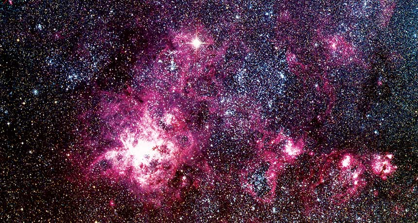

Supernova
Dilansir dari Wikipedia, Supernova (jamak Supernovae) adalah ledakan yang sangat energik dari suatu bintang besar dan masif yang berada di titik tertentu dalam siklus hidupnya, yang disebabkan oleh keruntuhan inti gravitasi di mana dapat memancarkan energi lebih banyak daripada nova dan kecerahannya dapat bertahan hingga beberapa bulan. Ini biasanya terjadi ketika fusi nuklirnya tidak dapat menahan inti dari gravitasinya sendiri dan akhirnya inti runtuh dan meledak. Peristiwa supernova ini menandai berakhirnya riwayat suatu bintang. Supernova adalah objek sementara. Bintang yang mengalami supernova akan tampak sangat cemerlang dan bahkan kecemerlangannya bisa mencapai satu miliar kali cahaya semula bintang tersebut (yang dapat mengungguli seluruh galaksi), setelah beberapa minggu akhirnya meredup, dan lenyap. Karena alasan ini, benda-benda tersebut sulit untuk diamati dan dipelajari, para astronom kini telah membuat pencarian supernova yang didedikasikan untuk mencari supernova baru dan memperoleh pengamatan yang cepat dan ekstensif. Beberapa minggu atau bulan sebelum suatu bintang mengalami supernova, bintang tersebut akan melepaskan energi yang setara dengan energi matahari yang dilepaskan matahari seumur hidupnya, ledakan ini meruntuhkan sebagian besar material bintang dengan kecepatan 10.000 - 30.000 km/s (beberapa hingga 10% tahun cahaya) dan melepaskan gelombang kejut yang mampu memusnahkan medium antarbintang. Ini menyapu cangkang gas dan debu yang mengambang, yang dikenal sebagai sisa supernova. Supernova dapat secara singkat mengungguli seluruh galaksi dan memancarkan lebih banyak energi daripada Matahari kita seumur hidupnya.

Para astronom membagi supernova menjadi 2 jenis utama, Tipe I dan II tergantung pada kurva cahaya dan sifat spektrumnya, baik menghentikan atau mengaktifkan produksi energi melalui fusi nuklir. Supernova tipe I kemungkinan besar bisa terbentuk sebagai katai putih yang mencuri gas panas dari bintang pendampingnya. Jika cukup banyak gas yang menumpuk di permukaan katai putih, ledakan termonuklir yang tak terkendali akan menghancurkan bintang itu berkeping-keping tanpa meninggalkan apapun. Ini adalah supernova paling terang, dan dapat mengukur jarak ke galaksi lain. Supernova tipe II adalah tahap terakhir dalam evolusi bintang masif tua yang setidaknya 8 kali lebih masif dari Matahari yang runtuh. Bintang seperti itu mencapai titik di mana ia tidak dapat lagi menghasilkan energi nuklir di intinya. Tanpa tekanan luar yang diciptakan energi ini, gravitasi menang dan menyebabkan inti bintang runtuh. Perbedaan di antara keduanya adalah supernova tipe I tidak memiliki garis hidrogen dalam spektrumnya, sementara supernova tipe II memiliki garis hidrogennya. Setelah inti bintang yang sudah tua berhenti menghasilkan energi, maka bintang tersebut akan mengalami keruntuhan gravitasi secara tiba-tiba dan meninggalkan sisa supernova, bintang berukuran sedang (antara dua hingga massa matahari) akan menjadi bintang neutron yang sangat padat, dan jika massa yang tersisa cukup besar (lebih dari lima kali massa matahari) sehingga gravitasi meruntuhkan inti hingga menjadi lubang hitam, dan melepaskan energi potensial gravitasi yang memanaskan dan menghancurkan lapisan terluar bintang. Bintang yang lebih kecil (yang ukurannya serupa dengan Matahari) akan menjadi katai putih.
Jenis-jenis Supernova
- Supernova tipe I : Pada supernova tipe I tidak memiliki tanda hidrogen dalam spektrum cahayanya.
- Supernova tipe Ia: Pada supernova ini, tidak ditemukan adanya garis spektrum hidrogen saat pengamatan. Supernova tipe Ia umumnya disebabkan berasal dari katai putih dari sistem bintang dekat. Saat gas dari bintang pendamping terakumulasi ke katai putih, katai putih secara bertahap terkompresi, dan akhirnya memicu reaksi nuklir yang tak terkendali di dalam yang akhirnya menyebabkan ledakan supernova dahsyat.
- Supernova tipe Ib/c: Pada supernova ini, tidak ditemukan adanya garis spektrum hidrogen ataupun helium saat pengamatan. Supernova tipe Ib/Ic juga mengalami keruntuhan inti seperti halnya supernova tipe II, tetapi mereka telah kehilangan sebagian besar selubung hidrogen luarnya.
- Supernova tipe II : Pada supernova ini, ditemukan adanya garis spektrum Hidrogen saat pengamatan. Agar sebuah bintang menjadi supernova tipe II, ia harus beberapa kali lebih masif dari matahari (perkiraan berkisar antara delapan hingga 15 massa matahari). Unsur-unsur lebih berat menumpuk dan berkumpul seperti bawang, inti memanas dan memadat. Akhirnya, bintang meledak dan materi bintang terpantul dari inti dan meluncur ke angkasa. Yang tersisa adalah objek sangat padat bernama bintang neutron.
- Supernova super-bercahaya: Ini adalah jenis supernova langka dan dapat menghasilkan kecerahan 10 hingga 100 kali supernova biasa.
- Hipernova: Supernova tipe ini melepaskan energi yang amat besar saat meledak. Energi ini jauh lebih besar dibandingkan energi saat supernova tipe yang lain terjadi.
Dampak dari Supernova
Secara umum, supernova dapat menimbulkan kehancuran total pada objek yang berada pada jarak 100 tahun cahaya dari peristiwa. Tetapi supernova juga merupakan jenis peristiwa terpenting untuk perkembangan materi, kompleks, dan selanjutnya kehidupan. Supernova memiliki dampak bagi kehidupan di luar bintang tersebut, di antaranya:
- Menghasilkan berbagai bahan kimia
- Menciptakan kehidupan di alam semesta
Pada inti bintang, terjadi reaksi fusi nuklir. Pada reaksi ini dilahirkan unsur-unsur yang lebih berat dari Hidrogen dan Helium. Saat supernova terjadi, unsur-unsur ini dilontarkan keluar bintang dan memperkaya awan antar bintang di sekitarnya dengan unsur-unsur berat. Gelombang kejut yang dihasilkan supernova memampatkan material yang dilewatinya dan merupakan satu-satunya tempat di mana banyak elemen seperti karbon, oksigen, nitrogen, silikon, seng, perak, timah, emas, merkuri, timbal dan uranium dan besi diproduksi. Selama beberapa bulan, gas mendingin dan meredup dalam kecerahan dan bergabung dengan puing-puing ruang antarbintang. Puing-puing memiliki semua elemen yang tercipta dalam inti bintang. Jutaan atau miliaran tahun ke depan, puing-puing ini mungkin saja bergabung membentuk bintang baru.
Supernova melontarkan unsur-unsur tertentu ke ruang angkasa. Unsur-unsur ini kemudian berpindah ke bagian-bagian lain yang jauh dari bintang yang meledak tersebut. Diasumsikan bahwa unsur atau materi tersebut kemudian bergabung membentuk suatu bintang baru atau bahkan planet di alam semesta. Faktanya bahwa Bumi mengandung unsur-unsur yang hanya diproduksi dalam supernova adalah bukti bahwa tata surya, planet, dan benda-benda kita mengandung materi yang telah lama diproduksi oleh supernova.